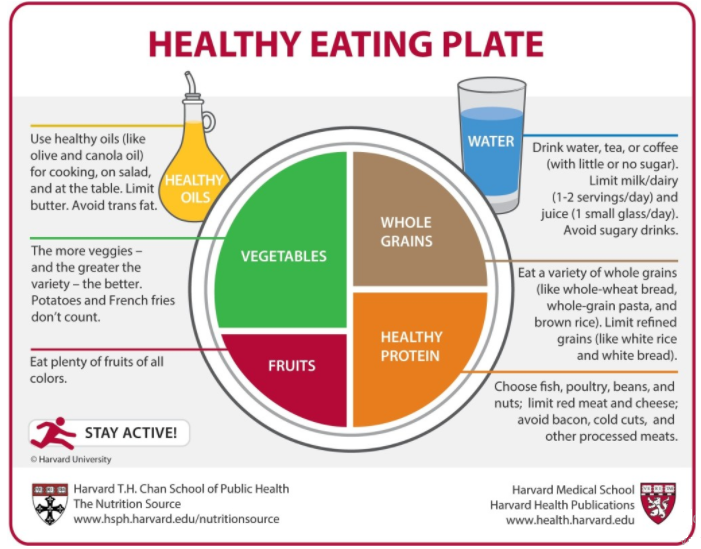

The Eat Well Plate helps us make eating healthy easier. Healthy eating is about getting the correct amount of nutrients – protein, fat, carbohydrates, vitamins and minerals you need to maintain good health.
Foods that contain the same type of nutrients are in the same category of the Eat Well Plate. This gives you a variety of foods from which to choose a healthy diet.

DropDown Activity
Choose the correct category for each type of food.
Instructions: click on the box to see the categories, select one.
After you complete the categories for all the words click on "Check" to evaluate your answers.
Green box: correct/ red box: incorrect
Example: milk: diary products
Click on "Show feedback" to see the correct answers.